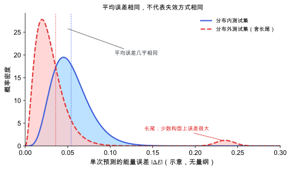

基准与验证
用什么参考数据、在什么条件下比较，才能说一个方法在某类问题上可靠；以及为什么一个数字（平均误差）几乎从来回答不了这个问题。
直观阅读需要
- 训练集、验证集、测试集的分工
- "误差"是一组数，不是一个数
只是提示，不需要先读完才能往下看。
直觉直观解释
“这个模型准不准”不是一个有唯一答案的问题。基准 (benchmark) 必须先回答三件事：
- 参考值是什么：DFT？实验？更高精度的方法？参考值本身有误差，而且常常不比被测方法小。
- 在什么数据上比：同一分布内的测试集，还是包含了训练时没见过的新构型、新元素、新相？
- 用什么指标比：平均绝对误差？分位点？某个下游决策的正确率？
三件事任何一件换了，结论就可能反转。所以看到“误差 5 meV/atom”这种数字，第一反应应该是问：在什么数据上、相对什么参考、分布尾部长什么样。
图里是同一个模型在两份测试集上的误差分布：平均误差几乎一样，但一份的尾部很短，另一份有大量大误差样本——后者才说明模型在哪些构型上会失效。

| 符号 | 是什么 | 图里对应哪部分 | ||
|---|---|---|---|---|
| $ | \Delta E | $ | 单次预测的能量误差 | 横轴 |
| 概率密度 | 该误差出现的频率 | 纵轴 | ||
| 实线分布 | 分布内测试集 | 蓝色曲线 | ||
| 虚线分布 | 分布外测试集 | 红色曲线 | ||
| 竖线 | 两份数据的平均误差 | 两条竖直虚线（位置几乎重合） |
定义与公式数学与推导
误差不是一个数
对一个测试集 \{(x_i, y_i)\}_{i=1}^{N}，模型给出预测 \hat y_i。常用的汇总量：
其中 x_i 是输入（结构）；y_i 是参考值；\hat y_i 是模型预测。
更有信息量的做法是报告分位数或直接看分布：例如 90%、99% 分位误差，以及最大误差出现在哪类构型上（见 预测的误差来自哪里）。
分布内与分布外
分布外性能无法由分布内性能推出。一个在训练分布内误差很低的模型，在分布外可能完全失效，而且失效方式往往不是“误差变大”，而是“给出自信但错误的答案”。
对这类失效，主动学习的思路是把模型不确定度高的构型挑出来补进训练集 [Podryabinkin & Shapeev 2017]。
参考值本身有误差
如果参考值是 DFT（例如 PBE），那么“模型误差”里包含了两部分：模型与 PBE 的差，以及 PBE 与真实值的差。要分离这两部分，必须有独立的高精度基准，例如量子蒙特卡洛或实验 [Burke 2012]。
这是一个很容易被忽略的点：很多“机器学习势达到 DFT 精度”的说法，实际含义是“与 DFT 的差小于 DFT 与实验的差”，而不是“更接近实验”。
可复现的最低要求
一个基准结果要能被别人重做，至少要写清：
- 参考值的计算方法与全部关键设置（泛函、色散、截断能、k 点、赝势、版本号）；
- 训练/测试划分方式，尤其是如何避免同一轨迹、同一结构的相邻帧跨集泄漏；
- 指标的定义（是否按原子数归一化、是否加权、包含哪些元素）；
- 代码与数据的可获得性。
在本研究线里的样子对应与边界
机器学习势的基准
- 训练分布：给定了哪些元素、哪些相、哪些温度与压强。MACE-MP-0 这类通用势的“通用性”是在什么意义上的通用，必须看它的训练集 [Batatia et al. 2023 (MACE-MP-0)]（来源见 MACE 与等变消息传递）。
- 多保真度训练：用便宜的泛函生成大量数据、用贵的泛函生成少量数据，两者如何混合是一个需要基准来回答的问题，而不是先验可推的 [Unke et al. 2021]。
- 规模律：模型变大、数据变多时误差怎样下降，以及这种下降关系是否对所有体系通用，是当前活跃的基准问题。具体结论要按最新文献核对，不要从旧论文外推。
有机分子晶体结构预测的基准
盲测 (blind test) 是最严格的基准形式：所有参与者在对实验结构不知情的情况下提交预测 [Reilly et al. 2016]。这类基准的价值在于它测的不是“方法在已知答案附近能不能找到”，而是“在给定的搜索预算下能不能排对”。
另一类基准是“同一批多晶型，用不同方法排序，看排序是否一致、是否与实验一致” [Hoja et al. 2019]。它更便宜，但只覆盖了少数体系。
常见坑对应与边界
- 只报一个平均数：掩盖尾部失效，而尾部往往正是下游任务关心的。
- 测试集泄漏：同一条 MD 轨迹的相邻帧被分到训练与测试两边，误差被严重低估。
- 参考值和方法同源：用 PBE 生成数据、再用 PBE 做参考值，测到的是“一致性”不是“正确性”。
- 跨论文直接比数字：数据集、归一化方式、元素范围都不同，数字不可直接比较。
- 把基准当排行榜：一个方法在某个基准上最好，不说明它在你的体系、你的下游任务上最好。
- 不报告失败案例：只说“平均误差”，不说“在哪些构型上失败”，等于没有提供可用的信息。
检验自己对应与边界
参考资料
论文Unke et al. 2021
O. T. Unke et al., Machine Learning Force Fields, Chem. Rev. 121, 10142 (2021)
尚未实际查阅，目前只是拟查阅书目
基准研究Reilly et al. 2016
尚未实际查阅，目前只是拟查阅书目
论文Hoja et al. 2019
尚未实际查阅，目前只是拟查阅书目
论文Burke 2012
K. Burke, Perspective on density functional theory, J. Chem. Phys. 136, 150901 (2012)
尚未实际查阅，目前只是拟查阅书目
论文Podryabinkin & Shapeev 2017
尚未实际查阅，目前只是拟查阅书目
论文Batatia et al. 2023 (MACE-MP-0)
I. Batatia et al., A foundation model for atomistic materials chemistry, arXiv:2401.00096 (2023)
尚未实际查阅，目前只是拟查阅书目
分类计算方法论 · 概念 · 研究线：机器学习势、结构预测与能量景观 · 状态：草稿